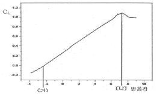
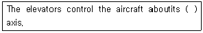
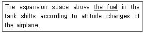
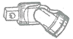
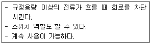

항공장비정비기능사 (2015-04-04 기출문제)
1과목: 비행원리
1. 회전익 항공기에서 회전축에 연결된 회전날개 깃이 하나의 수평축에 대해 위 아래로 움직이는 운동은?
- 스핀 운동
- 리드-래그 운동
- 플래핑 운동
- 자동 회전 운동
(정답률: 86%)

2. 다음 중 동압과 정압에 대한 설명으로 옳은 것은?
- 동압과 정압을 이용하여 항공기의 비행속도를 계산할 수 있다.
- 동압을 이용하여 객실고도를 계산할 수 있다.
- 동압을 이용하여 절대고도를 계산할 수 있다.
- 동압과 정압을 이용하여 항공기의 절대고도를 계산할 수 있다.
(정답률: 83%)
3. 입구의 지름이 10cm 이고, 출구의 지름이 20cm 인 원형관에 액체가 흐르고 있다. 지름 20cm 되는 단면적에서의 속도가 2.4m/s 일 때 지름 10cm 되는 단면적에서의 속도는 약 몇 m/s 인가?
- 4.8
- 9.6
- 14.4
- 19.2
(정답률: 77%)
4. 프로펠러 깃의 압력중심의 기본적인 위치를 나타낸 것으로 옳은 것은?
- 깃 끝 부근
- 깃 뿌리 부근
- 깃의 뒷전 부근
- 깃의 앞전 부근
(정답률: 72%)
5. 그림과 같은 받음각에 따른 양력계수(CL)의 변화를 나타낸 그래프에서 (가)와 (나)에 대한 용어로 옳은 것은?

- (가) 영양력 받음각, (나) 실속각
- (가) 최소 항력 받음각, (나) 실속각
- (가) 유도각, (나) 영양력 받음각
- (가) 실속각, (나) 영양력 받음각
(정답률: 73%)
6. 다음 중 버핏(Buffet) 현상을 가장 옳게 설명한 것은?
- 이륙 시 나타나는 비틀림 현상
- 착륙 시 활주로 중앙선을 벗어나려는 현상
- 실속속도로 접근 시 비행기 뒷부분의 떨림 현상
- 비행 중 비행기 앞부분에서 나타나는 떨림 현상
(정답률: 83%)
7. 비중량에 대한 설명으로 옳은 것은?
- 단위 체적당 중량
- 단위 질량당 중량
- 단위 길이당 최소 중량
- 단위 면적당 작용하는 최소중량
(정답률: 74%)
8. 수직꼬리날개와 동체 상부에 장착하여 방향안정성을 증가시키기 위한 것은?
- 실속 스트립
- 슬롯
- 볼텍스 발생장치
- 도살 핀
(정답률: 91%)
9. 프로펠러 항공기기관의 제동마력이 260ps 이고, 프로펠러효율이 0.8일 때 이 비행기의 이용마력은 몇 ps인가?
- 108
- 208
- 308
- 408
(정답률: 84%)
10. 헬리콥터가 전진비행을 할 때 회전날개 깃에 발생하는 양력분포의 불균형을 해결할 수 있는 방법으로 가장 옳은 것은?
- 전진하는 깃과 후퇴하는 깃의 받음각을 동시에 증가시킨다.
- 전진하는 깃과 후퇴하는 깃의 받음각을 동시에 감소시킨다.
- 전진하는 것의 받음각은 증가시키고 뒤로 후퇴하는 깃의 받음각은 감소시킨다.
- 전진하는 깃의 받음각은 감소시키고 뒤로 후퇴하는 깃의 받음각은 증가시킨다.
(정답률: 73%)
11. 활공기가 고도 2400m 상공에서 활공하여 수평활공거리 36km를 비행하였다면, 이때 양항비는 얼마인가?
- 1/5
- 10
- 1/15
- 15
(정답률: 72%)
12. 공기의 밀도 단위가 kgf·s2/m4으로 주어질 때 kgf 단위의 의미는?
- 질량
- 중량
- 비중
- 비중량
(정답률: 73%)
13. 수평비행을 하던 비행기가 연직 상방향으로 관성력을 받을 때 비행기의 하중배수를 옳게 나타낸 식은?
- 비행기 무게/관성력
- 1+(관성력/비행기 무게)
- 1+(비행기 무게/관성력)
- 비행기 무게/(비행기 무게-관성력)
(정답률: 73%)
14. 비행기가 평형상태에서 벗어난 뒤에 다시 평형상태로 돌아가려는 초기의 경향을 가장 옳게 설명한 것은?
- 정적 안정성이 있다. [양(+)의 정적 안정]
- 동적 안정성이 있다. [양(+)의 동적 안정]
- 정적으로 불안정하다. [음(-)의 정적 안정]
- 동적으로 불안정하다. [음(-)의 동적 안정]
(정답률: 78%)
15. 고속형 날개에서 항력발산마하수를 넘어서면 어떤 항력이 급증하는가?
- 형상 항력
- 압력 항력
- 조파 항력
- 표면 마찰 항력
(정답률: 79%)
16. 수직공간이 제한된 곳에 사용되는 스크류드라이버의 명칭으로 옳은 것은?
- 리드 스크류 드라이버
- 래칫 스크류 드라이버
- 오프셋 스크류 드라이버
- 프린스 스크류 드라이버
(정답률: 75%)
17. 볼트와 너트로 체결하는 작업 시 안전 및 유의사항에 대한 설명으로 틀린 것은?
- 렌치를 사용할 땐 당기는 방향으로 힘을 가한다
- 익스텐션 바를 사용시 손으로 바를 잡아 고정하고 작업한다.
- 볼트와 너트를 조일 때는 해체할 때보다 한단계 작은 치수의 렌치를 사용한다.
- 볼트나 너트를 조일 때는 일정부분 손으로 조인 후 렌치를 사용하여 마무리한다.
(정답률: 85%)
18. 다음 중 성형점에서 굴곡접선까지의 거리를 나타낸 명칭은?
- 중립선
- 셋트백
- 굴곡 허용량
- 사이트 라인
(정답률: 79%)
19. 다음 중 항공기의 지상취급에 해당되지 않는 작업은?
- 잭작업
- 계류작업
- 견인작업
- 계획된 액세서리 교환작업
(정답률: 84%)
20. 표면이 눌려 원래의 외형으로부터 변형된 현상으로 단면적의 변화는 없으며 손상부위와 손상되지 않는 부위 사이와의 경계 모양이 완만한 형상을 이루고 있는 결함은?
- 찍힘(Nick)
- 눌림(Dent)
- 긁힘(Scratch)
- 구김(Crease)
(정답률: 88%)
2과목: 항공기정비
21. 2개 이상의 굽힘이 교차하는 부분의 안쪽 굽힘 접선 교점에 발생하는 응력집중에 의한 균열을 방지하기 위해 뚫는 구멍은?
- 스톱 홀
- 릴리프 홀
- 리머 홀
- 파일럿 홀
(정답률: 82%)
22. 비파괴 검사법 중 피폭안전에 철저한 관리가 요구되는 검사법은?
- 침투탐상검사
- 와전류검사
- 자분탐상검사
- 방사선투과검사
(정답률: 79%)
23. 다음 ( )안에 들어갈 알맞은 용어는?

- vertical
- lateral
- longitudinal
- horizontal
(정답률: 65%)
24. 밑줄 친 부분의 영문 내용으로 옳은 것은?

- 연료
- 윤활유
- 유압유
- 공기압
(정답률: 88%)
25. 좁은 장소에서 작업할 때 굴곡이 필요한 경우 래칫핸들, 스피드 핸들, 소켓 또는 익스텐션바와 함께 사용되는 그림과 같은 것은?

- 어댑터
- 유니버셜 조인트
- 벨트 렌치
- 콤비네이션 렌치
(정답률: 86%)
26. 항공기 접지에 대한 설명으로 옳은 것은?
- 정전기의 축적을 막는다.
- 전기 저항을 증가시킨다.
- 전기 전압을 증가시킨다.
- 번개의 위험을 벗어나기 위한 작업이다.
(정답률: 87%)
27. 「MS20426AD4-4」리벳을 사용한 리벳 배치작업 시 최소 끝거리는 몇 인치인가?
- 5/16
- 3/8
- 1/4
- 7/32
(정답률: 54%)
28. 게이지블록(Gauge blocks)에 대한 설명으로 틀린것은?
- 사용하기 전에 마른 걸레나 솔벤트로 방청제 등의 이물질을 닦아낸다.
- 사용 시 손가락 끝으로 잡아 접촉면적을 되도록 작게 한다.
- 이론상 측정력은 접촉 면적에 비례하여 증가되어야 하며, 실제로는 표준이 되는 측정력을 사용하는 것이 좋다.
- 측정할 때 정밀도는 온도와는 관련이 없고, 링킹(Wringking)작업과 관련이 깊다.
(정답률: 71%)
29. 화학적 또는 전기화학적 반응에 의해 재료의 성질이 변화 또는 퇴화하는 현상을 무엇이라 하는가?
- 균열(Crack)
- 마모(Abrasion)
- 골패임(Gouge)
- 부식(Corrosion)
(정답률: 88%)
30. 다음 중 헬리콥터의 지상정비지원은 어떤 정비에 해당 되는가?
- 공장 정비
- 벤치 체크
- 운항 정비
- 시한성 정비
(정답률: 70%)
31. 다음 중 신뢰성 정비 방식에 채택될 수 있는 여건으로 가장 거리가 먼 것은?
- 정비인력의 증가
- 항공기 설계개념의 진보
- 항공기 기자재의 품질수준 향상
- 비파괴 검사방법 등에 의한 검사법 발전
(정답률: 78%)
32. 휴대용 소화기 중 조종실이나 객실에 설치되어 일반화재, 전기화재 및 기름화재에 사용되는 소화기는?
- 분말소화기
- 물소화기
- 포말소화기
- 이산화탄소소화기
(정답률: 69%)
33. 운항정비 기간에 발생한 항공기정비 불량 상태의 수리와 운항 저해의 가능성이 많은 각 계통의 예방정비 및 감항성을 확인하는 것을 목적으로 하는 정비작업은?
- 중간점검(Transit check)
- 기본점검(Line maintenance)
- 정시점검(Schedule maintenance)
- 비행 전후 점검(Prepost flight check)
(정답률: 72%)
34. 보통 나무, 종이, 직물 및 잡종 폐기물 등과 같은 가연성 물질에 일어나는 화재는?
- A급
- B급
- C급
- D급
(정답률: 90%)
35. 항공기용 기계요소 및 재료에 대한 규격 중군(Military)에 관련된 규격이 아닌 것은?
- AN
- MIL
- ASA
- MS
(정답률: 75%)
36. 동압(Pitot pressure)과 정압(Static pressure)을 이용하는 기본적인 계기는?
- 동기전동기, 유압계
- E.P.R
- 회전계, 방향지시계
- 속도계, 고도계
(정답률: 80%)
37. 다음 중 산소 식별 테이프에 대한 설명으로 옳은 것은?
- 청색 바탕에 검은색 사각형 모양
- 흰색 바탕에 검은색 사각형 모양
- 녹색 바탕에 검은색 별표 모양
- 회색 바탕에 검은색 별표 모양
(정답률: 62%)
38. 일반적으로 전기식 방빙이 사용되지 않는 곳은?
- 얼음 감지기
- 피토관
- 조종실 윈도
- 리딩 엣지
(정답률: 60%)
39. 열전쌍(Thermo-couple)의 특성을 이용한 계기는?
- 외기온도계기
- 윤활온도계기
- 연료온도계기
- 배기가스온도계기
(정답률: 69%)
40. 다음과 같은 특성을 갖는 회로 보호장치는?

- 퓨즈
- 회로차단기
- 전류 제한기
- 열 보호장치
(정답률: 80%)
3과목: 항공장비
41. 다음 중 여객기용 비상장비 및 장치에 속하지 않는 것은?
- 낙하산
- 비상신호용 장비
- 산소공급장치
- 비상탈출 미끄럼대
(정답률: 81%)
42. 항공계기를 수감부, 확대부, 지시부로 나눌 경우 수감부로 사용되지 않는 것은?
- 벨로스
- 다이아프램
- 부르동관
- 피니언 기어
(정답률: 63%)
43. 지자기의 3요소가 아닌 것은?
- 자차
- 편각
- 복각
- 수평분력
(정답률: 57%)
44. 2in2 면적의 피스톤과 10in2 면적을 가진 실린더가 서로 유체역학적으로 연결되어 있을 경우 전자에 10psi의 압력을 인가할 때 후자의 압력은 몇 psi인가?
- 2
- 5
- 10
- 50
(정답률: 55%)
45. 브레이크 종류 중 중형 이상의 항공기에 사용되며 여러개의 회전판과 고정판을 사용하는 것은?
- 슈 브레이크(Shoe brake)
- 다중 디스크 브레이크(Multi-disk brake)
- 단일 디스크 브레이크(Single disk brake)
- 팽창 튜브 브레이크(Expansion tube brake)
(정답률: 84%)
46. 승강계에서 모세관의 저항이 증가할 때 성능에 대한 설명으로 옳은 것은?
- 감도는 증가하고 계기 지시의 지연이 증가한다.
- 감도는 증가하고 계기 지시의 지연이 짧아진다.
- 감도는 감소하고 계기 지시의 지연이 증가한다.
- 감도는 감소하고 계기 지시의 지연이 짧아진다.
(정답률: 44%)
47. 항공기에서 3상 교류 발전기(A.C Generator)를 사용할 때 장점이 아닌 것은?
- 효율이 우수하다.
- 정비 및 보수가 쉽다.
- 무게가 무거워 진동이 적다.
- 높은 전력의 수요를 감당하는데 적합하다.
(정답률: 77%)
48. 대형 항공기의 탑재용 APU에 대한 설명으로 옳은 것은?
- 주기관 고장 시 비상신호를 발생시키는 장치이다.
- 주기관 고장시 필요한 추력을 얻기위한 장치이다.
- 주기관 고장시 필요한 교류 전원과 블리드공기를 얻기 위한 장치이다.
- 주기관에 연료 부족시 추가 연료를 공급하기 위한 장치이다.
(정답률: 68%)
49. 싱크로 발신기와 싱크로 수신기의 각도차이가 0도 일 때 회전 방향은?(오류 신고가 접수된 문제입니다. 반드시 정답과 해설을 확인하시기 바랍니다.)
- 회전하지 않는다.
- 반대 방향으로 회전한다.
- 같은 방향으로 회전한다.
- 정회전과 역회전을 반복회전 한다.
(정답률: 50%)
50. 액체를 보내는 튜브 중간에 오리피스를 설치하여 오리피스의 상류와 하류 액체흐름의 압력차를 지시하는 유량계는?
- 질랑 유량계
- 차압식 유량계
- 면적식 유량계
- 부자식 유량계
(정답률: 70%)
51. 비상 위치 지시용 무선표지설비는 조난신호를 몇 시간 동안 지속적으로 발신하도록 되어 있는가?
- 12시간
- 24시간
- 48시간
- 96시간
(정답률: 76%)
52. 스위치에 의하여 먼 거리의 많은 전류가 흐르는 회로를 직접 개폐시키는 역할을 하는 일종의 전자기 스위치는?
- 계전기
- 회전선택 스위치
- 토글 스위치
- 푸시버튼 스위치
(정답률: 59%)
53. 이산화탄소 소화제 및 용기에 대한 설명으로 틀린것은?
- 이산화탄소의 원소기호는 CO2이다.
- 압력의 상승을 위하여 가압용 질소가스를 봉입 한다.
- 밀폐된 장소에서 이산화탄소 소화제 사용은 위험하다.
- 이산화탄소의 용적을 작게 하기 위하여 저압의 기체 상태로 가압하여 압력용기에 넣는다.
(정답률: 64%)
54. 대기압이 객실내의 기압보다 높을 경우에 대기의 공기가 객실로 자유롭게 들어오도록 되어 있는 객실압력 안전 밸브는?
- 덤프 밸브
- 아웃플로우 밸브
- 압력릴리프 밸브
- 부압릴리프 밸브
(정답률: 46%)
55. 항공기에 전선을 사용하기 위해 선택할 경우 우선적으로 고려해야 할 사항이 아닌 것은?
- 전선의 색
- 전선의 길이
- 전선에 흐르는 전류량
- 공급하려고 하는 전압
(정답률: 74%)
56. 항공기에 사용하는 전기식 회전계의 작동원리에 대한 설명이 아닌 것은?
- 직접구동 한다.
- 원격 지시 방식이다.
- 회전하고 있는 부분의 돌출 부분을 센다.
- 드래그캡(Drag cap)이라 부르는 회전속도를 지시 한다.
(정답률: 47%)
57. 유압 피스톤의 홈 부분에 O-링을 끼울 때 백업 링을 사용하는 주된 목적은?
- O-링에서 더러워진 부착물을 떨어지게 하기 위해
- O-링이 틈새에서 밀려나오는 것을 방지하기 위해
- 처음의 O-링이 파손된 경우 예비 역할을 하기 위해
- O-링의 장착 및 분해시 편의를 돕기 위해
(정답률: 68%)
58. 유량제어장치인 흐름평형기(flow equalizer)에서 작동유가 각 작동기에 공급될 때 유량제어에 사용되지 않는 부품은?
- 결합 체크밸브
- 미터링 그루브
- 분리 체크밸브
- 자유부동 미터링 피스톤
(정답률: 36%)
59. 유압계통에서 축압기(accumulator)의 기능이 아닌것은?
- 가압된 작동유를 저장한다.
- 유압 계통의 서지 현상을 방지한다.
- 계통에 사용된 유체를 저장과 배출한다.
- 펌프고장시 작동유를 유압장치에 공급한다.
(정답률: 47%)
60. 30V의 전압에 의해 3A의 전류가 흐르는 전기회로에서 저항은 몇 Ω 인가?
- 0.1
- 3
- 10
- 33
(정답률: 86%)